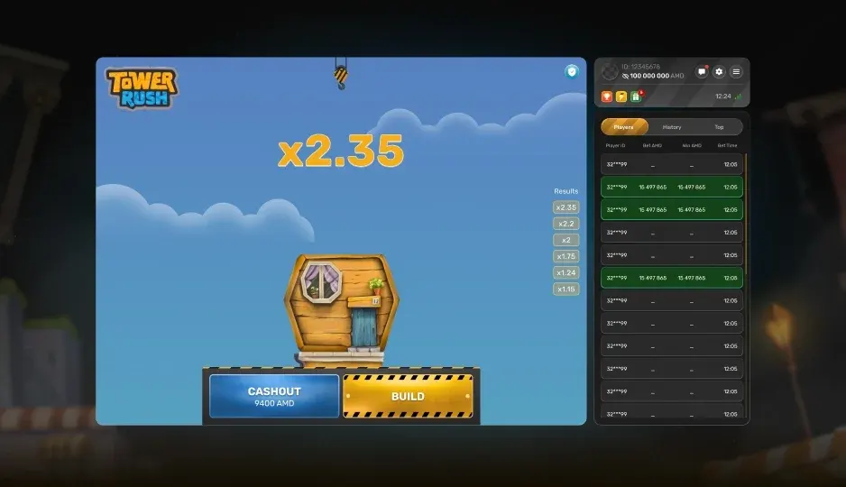

Strategy
Tower Rush Block Timing: Where Most Runs Actually End
The tower does not collapse at random heights. Here is how the risk per block changes as you build, and the range where most sessions quietly bleed out.
🔞 18+ only · Real-money gambling

Tower Rush gives you one decision, repeated: place another block or bank what you have. Every block raises the payout and the chance the run ends. The interesting part is that those two curves do not move at the same speed.
How risk stacks up
The first blocks are cheap — the multiplier moves a little and the failure chance stays low. Further up, each block adds a smaller proportional gain against a larger proportional risk. That crossover is where a session is won or lost.
Three phases of a run
Early blocks — low risk, low reward, almost free to take.
Middle — the payoff is meaningful and the risk is still tolerable.
Top — small gains, sharply rising failure chance, and the reason most runs end with nothing.
Where runs finish
Blocks placed | Typical multiplier | Runs reaching it |
|---|---|---|
1 – 3 | Up to ~1.5× | Most |
4 – 7 | ~2× – 4× | Roughly half |
8+ | 5×+ | Few |
Banking at a fixed height is not a strategy that beats the game. It is a rule that stops one bad decision from turning into six.
A rule set worth using
Choose a block count before the run and bank there regardless of how it looks.
Do not raise the target after a loss — that is the most expensive habit in the game.
Size the stake for a streak of losses, not for the win you are picturing.
Set a session loss limit in money and honour it.
The mechanics cost nothing to learn — try them in the free demo first.